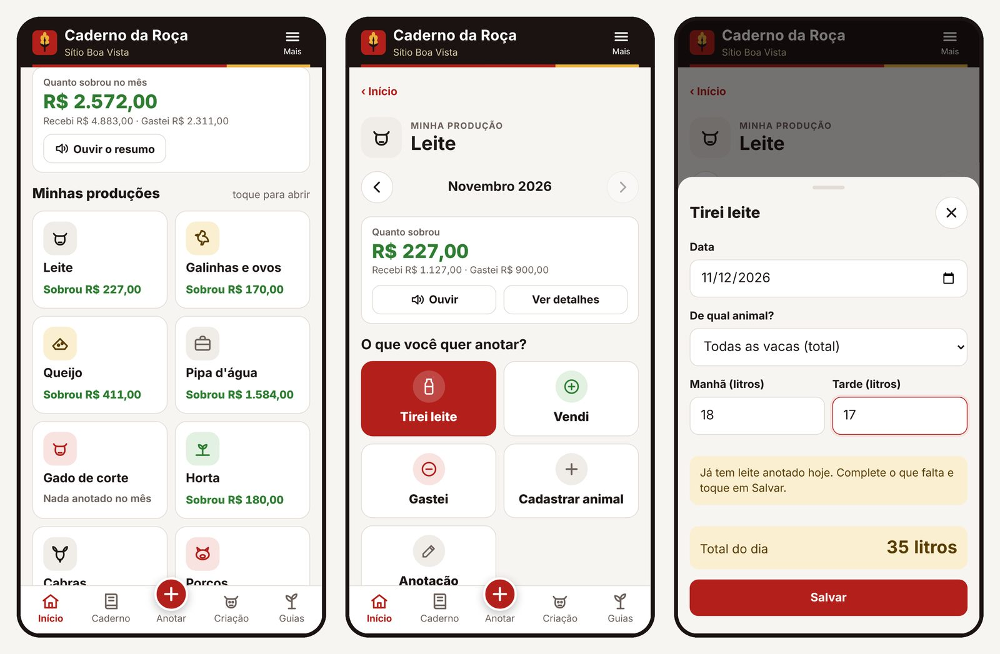
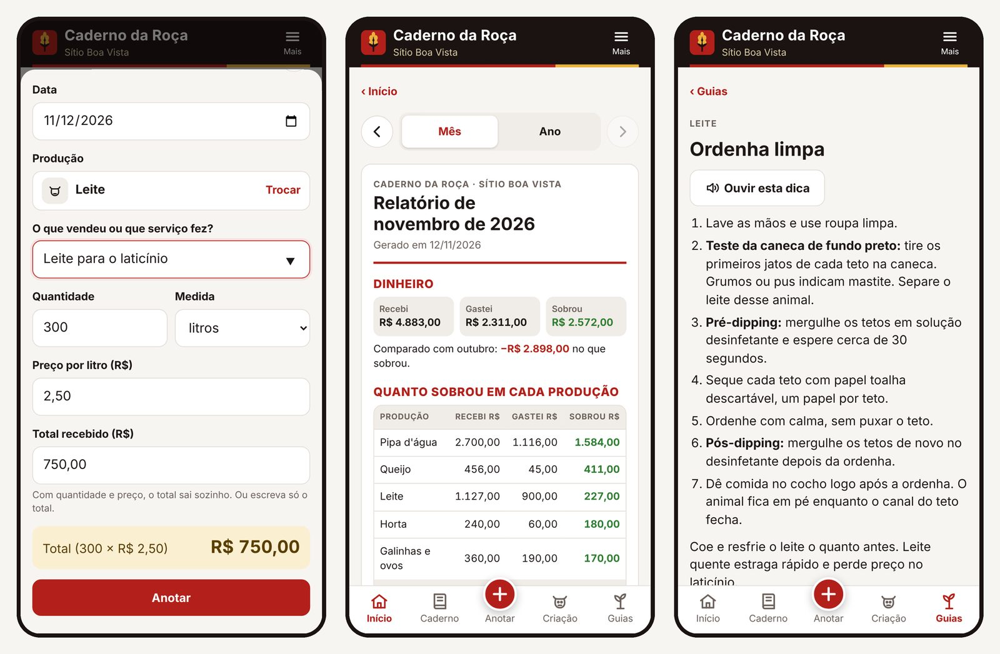

Para Secretarias Municipais de Agricultura
Um aplicativo simples, que funciona sem internet e fala em voz alta, para a família registrar a produção. E um painel para a Secretaria acompanhar comunidades, chuva, fila do trator, merenda escolar, CAF, água e assistência técnica.

O problema
Na maioria dos municípios do semiárido, as informações da agricultura familiar estão em cadernos, planilhas soltas e na memória dos técnicos.
Ninguém sabe quanto leite, queijo, ovos e hortaliças o município produz, nem onde. Fica difícil planejar, pedir recursos e comprar para a merenda.
Trator, carro-pipa, sementes: o produtor não sabe quando será atendido, e a Secretaria recebe a mesma cobrança várias vezes.
O mínimo de 45% da merenda escolar comprado da agricultura familiar, o CAF das famílias e os laudos de perda de safra exigem números que ninguém consolida.
Como funciona
No app, com botões grandes como "Tirei leite", "Vendi" e "Choveu". Funciona sem internet e lê tudo em voz alta.
Ela escolhe participar e compartilhar com a Secretaria. Pode sair quando quiser.
O painel mostra os números somados por comunidade, sem expor a renda de ninguém, e gera relatórios e planilhas.
Para o produtor
O aplicativo é organizado por produção: leite, queijo, galinhas, cabras, porcos, peixes, roçado, horta e serviços como frete e pipa d'água.

Para a Secretaria
Toque em qualquer módulo para abrir a demonstração com dados fictícios.
Produção, chuva, serviços e alertas do mês numa tela só.
Ver → PanoramaLeite, ovos, queijo e chuva por comunidade, com histórico de 12 meses.
Ver → PanoramaComunidades, cisternas, barreiros e pedidos de trator no mapa.
Ver → Produção e climaPluviômetros das famílias contra a média histórica, e perdas de safra.
Ver → Produção e climaRelatório pronto para projetos, emendas e o plano municipal rural.
Ver → ServiçosFila transparente por ordem de chegada, agenda e horas feitas.
Ver → ServiçosHora de Plantar, palma e ração: quem recebeu, sem duplicidade.
Ver → ServiçosPedidos de abastecimento, cisternas e rota do dia.
Ver → ServiçosVisitas com foto e localização, e quem está há mais tempo sem visita.
Ver → ProgramasAcompanha o mínimo legal de 45% e mostra onde há produção para comprar.
Ver → ProgramasCadastros vencendo, famílias sem CAF e sugestão de mutirão.
Ver → ComunicaçãoMensagens que chegam no app da família e podem ser ouvidas.
Ver → ComunicaçãoRelatório mensal e planilhas para o prefeito, o conselho e o Tribunal de Contas.
Ver →Privacidade e LGPD
Implantação
Demonstração para o secretário e a equipe técnica.
Comunidades, técnicos, programas e a identidade do município no painel.
Treinamento dos técnicos e agentes, e oficinas nas associações.
Suporte, ajustes e relatório de uso a cada mês.
Planos
O aplicativo continua gratuito para o produtor. A prefeitura contrata o painel e os módulos que precisar.
Valores sob consulta
Valores sob consulta
Valores sob consulta
Agende uma apresentação para a Secretaria de Agricultura. Mostramos o painel com os dados do seu município e montamos uma proposta.